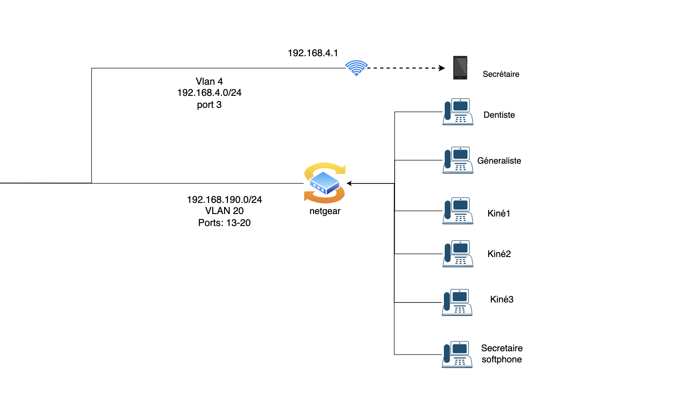

Téléphonie
Nous avons mis en place la téléphonie réseau avec un switch Netgear qui contient 6 téléphones IP reliés par des câbles Ethernet, ainsi qu'un smartphone connecté via le Wi-Fi. Tous les téléphones sont connectés à un serveur Asterisk. La représentation de l'architecture est la suivante :
 Cliquez pour plus de détails sur l'installation